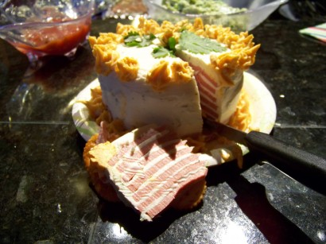

Bologna Cake

Description
What do you mean, "WTF?"
Ingredients
- 2 packages cream cheese
- 1 package Hidden Valley Ranch Dressing (1 ounce packet)
- 12 ounces sliced bologna
- 1 8 oz can of sharp cheddar aerosol cheese
- 1 spring of cilantro for garnish
- 1 package buttery crackers
Steps
- Mix ranch dressing into softened cream cheese. Set aside.
- Place a slice of bologna on a plate. Spread one tablespoon of cream cheese on top of the slice. Add a second slice of bologna. Continue until all bologna is used.
- Use remainder of the cream cheese to "frost" the cake. Decorate the cake with aerosol cheese. Top with cilantro sprig.
- Cut cake into wedges and serve on buttery crackers.
- Die alone.